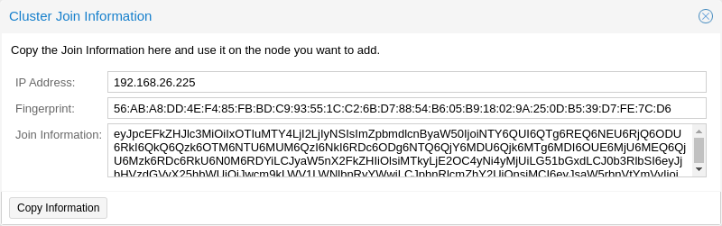
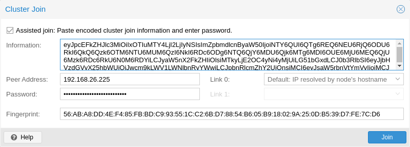

All existing configuration in /etc/pve is overwritten when joining a
cluster. In particular, a joining node cannot hold any guests, since guest IDs
could otherwise conflict, and the node will inherit the cluster’s storage
configuration. To join a node with existing guest, as a workaround, you can
create a backup of each guest (using vzdump) and restore it under a different
ID after joining. If the node’s storage layout differs, you will need to re-add
the node’s storages, and adapt each storage’s node restriction to reflect on
which nodes the storage is actually available.

Log in to the web interface on an existing cluster node. Under Datacenter → Cluster, click the Join Information button at the top. Then, click on the button Copy Information. Alternatively, copy the string from the Information field manually.

Next, log in to the web interface on the node you want to add. Under Datacenter → Cluster, click on Join Cluster. Fill in the Information field with the Join Information text you copied earlier. Most settings required for joining the cluster will be filled out automatically. For security reasons, the cluster password has to be entered manually.
To enter all required data manually, you can disable the Assisted Join checkbox.
After clicking the Join button, the cluster join process will start immediately. After the node has joined the cluster, its current node certificate will be replaced by one signed from the cluster certificate authority (CA). This means that the current session will stop working after a few seconds. You then might need to force-reload the web interface and log in again with the cluster credentials.
Now your node should be visible under Datacenter → Cluster.
Log in to the node you want to join into an existing cluster via ssh.
# pvecm add IP-ADDRESS-CLUSTER
For IP-ADDRESS-CLUSTER, use the IP or hostname of an existing cluster node.
An IP address is recommended (see Link Address Types).
To check the state of the cluster use:
# pvecm status
Cluster status after adding 4 nodes.
# pvecm status
Cluster information
~~~~~~~~~~~~~~~~~~~
Name: prod-central
Config Version: 3
Transport: knet
Secure auth: on
Quorum information
~~~~~~~~~~~~~~~~~~
Date: Tue Sep 14 11:06:47 2021
Quorum provider: corosync_votequorum
Nodes: 4
Node ID: 0x00000001
Ring ID: 1.1a8
Quorate: Yes
Votequorum information
~~~~~~~~~~~~~~~~~~~~~~
Expected votes: 4
Highest expected: 4
Total votes: 4
Quorum: 3
Flags: Quorate
Membership information
~~~~~~~~~~~~~~~~~~~~~~
Nodeid Votes Name
0x00000001 1 192.168.15.91
0x00000002 1 192.168.15.92 (local)
0x00000003 1 192.168.15.93
0x00000004 1 192.168.15.94
If you only want a list of all nodes, use:
# pvecm nodes
List nodes in a cluster.
# pvecm nodes
Membership information
~~~~~~~~~~~~~~~~~~~~~~
Nodeid Votes Name
1 1 hp1
2 1 hp2 (local)
3 1 hp3
4 1 hp4
When adding a node to a cluster with a separated cluster network, you need to use the link0 parameter to set the nodes address on that network:
# pvecm add IP-ADDRESS-CLUSTER --link0 LOCAL-IP-ADDRESS-LINK0
If you want to use the built-in redundancy of the Kronosnet transport layer, also use the link1 parameter.
Using the GUI, you can select the correct interface from the corresponding Link X fields in the Cluster Join dialog.